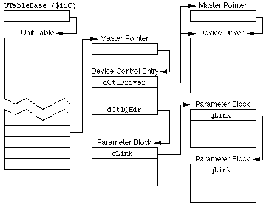

|
|
This Technical Note describes in detail the operation of the Device Manager and
its interaction with device drivers. It provides the background needed for correct
operation of third-party device drivers and also presents a method for finding an entry
in the Unit Table for a driver.
Many aspects of the Device Manager remain mysterious to even the most studious of
Macintosh developers, especially those who might wish to accomplish tasks not directly
supported by the current offering of calls. For example, developers might wish
to install their own driver at INIT time or wish to manage their own I/O queues
for processing. A solid knowledge of the Device Manager helps in these tasks,
as well as in simply writing a normal, no-frills device driver.
A general-usage driver, which is best installed at INIT time, provides services
to software that might run on a Macintosh at any time. This type of driver is
typically implemented by having a file of type INIT, cdev, or RDEV that users
move into their System Folder. This file contains 'INIT' and
'DRVR' resources, among others. The 'INIT' resource gets
loaded into memory and executed, at which time it installs the driver.
[Aug 01 1990]
|
Caveat--Low Memory and System Data Structures
Warning: This Note involves the discussion and use of low-memory globals
and operating system internal data structures. It is a plain fact that using
these puts software at a compatibility risk; therefore, DTS recommends you
approach the information in this Note in the following manner:
- If you do not have to use a low-memory global or system data structure, then don't.
- If you do have to use a low-memory global or system data structure, use it only as described in this Note, or in other, authorized Apple Computer, Inc., technical documentation.
- When using a low-memory global or system data structure in an authorized manner, do so in a way that encapsulates and isolates this dependency from the rest of this software. This way, if Apple alters the structure of space-time out from under you, there is one nice, tidy spot that you have to modify.
- When Apple provides a system-independent manner by which you can obtain the same information, modify your code to use this method.
An example of points three and four would be using a module that returns a
low-memory global instead of always reaching into low-memory directly. For
example, when this Note references the low-memory global UTableBase,
the software that needs the value stored there should call a routine like the following:
FUNCTION GetUTableBase : Ptr;
CONST
UTableBase = $11C;
TYPE
LongPtr = ^LongInt;
BEGIN
GetUTableBase := POINTER(LongPtr(UTableBase)^);
END;
|
Then, if Apple were to provide a Gestalt call to get the same value,
only this one module would (and should) be changed. If you are blessed enough
to be using a high-level or, better yet, an object-oriented language, you can
even further isolate the dependency by encapsulating a whole mechanism that
relies on low-memory globals and system data structures into a module that can
be completely replaced if needed.
It should go without saying that simply because this Note uses some low-memory
globals and system data structures, it does not mean Apple has gone soft on software
that uses them, especially when they violate the aforementioned guidelines.
Back to top
Driven to Tears
A solid understanding of the Device Manager begins with knowledge of its data
structures. Although much of the following is described in Inside
Macintosh, Apple has made some changes since its publication.
First, there is the structure of the unit table. It is a non-relocatable block
in the system heap that is pointed to by the low-memory global
UTableBase ($11C). The unit table is a contiguous table of
handles to Device Control Entry (DCE) records. The offset of a handle within
the unit table (its entry, or "slot") determines the unit number for the
driver, as well as the refnum for that handle, since a unit number
relates to a refnum in the following way:
refnum = ~( unit number )
|
If the handle at a particular slot is NIL, there is no DCE and thus no
driver installed for that refnum. There is another low-memory global,
UnitNtryCnt ($1D2), which is the count of entries in the unit
table. This low-memory global can be used to know when to stop searching the
unit table.
Many of the slots in the unit table are committed to certain devices due to the
fact that the corresponding reference numbers are committed to those devices.
For example, the refnum -3 is reserved for the .Print driver;
therefore, unit number -(-3)-1=2 is reserved, which means that the
slot at offset 8 (4 bytes per handle * 2) in the unit table is
reserved for the handle to the DCE of the .Print driver. This relationship is
true even if the slot is currently NIL, because a lot of the operating
system, Toolbox, and applications make heavy assumptions about the
refnum of a particular device. There are more detailed lists in
Inside Macintosh, but following is a summary list of what unit numbers
are committed to what device types:
Unit Number Range Refnum Range Usage
0 through 11 -1 through -12 Serial, disk, AppleTalk, printer, and so on
12 through 31 -13 through -32 Desk accessories
32 through 39 -33 through -40 SCSI devices
40 through 47 -41 through -48 AppleShare and other reserved for Apple
48 through 63, 127 -49 through -64, -128 Slot drivers--open for other drivers as well
The entry for unit numbers 48 and above requires some explanation. First, on
the Macintosh 512KE and Macintosh Plus, the unit table does not go past unit
number 47; this point is addressed later. On the Macintosh SE, the unit table
is large enough to hold up to unit number 63. On the Macintosh II family of
machines, the unit table is large enough to hold up to unit number 127;
UnitNtryCnt is probably lower, though not lower than 64.
After documenting the device control entry blocks in Inside Macintosh,
Volume II, Apple has expanded them to deal with new features like the Slot
Manager. The new DCE looks the same as the old DCE, but contains a few
additional fields:
TYPE AuxDCE = PACKED RECORD
dCtlDriver: Ptr;
dCtlFlags: INTEGER;
dCtlQHdr: QHdr;
dCtlPosition: LONGINT;
dCtlStorage: Handle;
dCtlRefnum: INTEGER;
dCtlCurTicks: LONGINT;
dCtlWindow: Ptr;
dCtlDelay: INTEGER;
dCtlEMask: INTEGER;
dCtlMenu: INTEGER;
|
The following fields are the additions for the new DCE record:
dCtlSlot: Byte;
dCtlSlotId: Byte;
dCtlDevBase: LONGINT;
reserved: LONGINT;
dCtlExtDev: Byte;
fillByte: Byte;
END;
|
The core structure of parameter blocks has remained the same as described in
Inside Macintosh. They begin with the standard I/O queue fields:
TYPE ParamBlockRec = RECORD
qLink: QElemPtr;
qType: INTEGER;
ioTrap: INTEGER;
ioCmdAddr: Ptr;
ioCompletion: ProcPtr;
ioResult: OSErr;
ioNamePtr: StringPtr;
ioVRefNum: INTEGER;
ioRefNum: INTEGER;
...
END;
|
The rest of the parameter block is heavily dependent on the device driver that
uses it and what kind of driver call is being made.
The Unit Table, the DCE, and the Parameter Block all work together to provide
all the information necessary for the application, Device Manager, and device
driver to communicate with one another. For example, the structure of a
RAM-based driver that has been opened and called asynchronously a few times
might look like that shown in Figure 1.

Figure 1. Basic Device Manager Data Structures.
|
Back to top
Routine Maintenance
A device driver is a block of data composed of a header followed by executable
code. The header contains flags, a delay amount, an event mask, a menu ID, an
optional name of the driver, and offsets to the routines that are in the
executable code. Inside Macintosh describes device drivers as being
'DRVR' resources. Although this is typically the case, it should be
noted that this is not necessarily a requirement, as long as certain rules are
followed. Details of these rules are discussed later in this Note.
A device driver can implement five routines. The Device Manager calls these
routines when certain operating system traps are executed. The traps are called
with register A0 pointing to the parameter block. Some of these traps
can be called in one of two different modes: immediate and asynchronous. If bit
9 of the trap word is set, the call is immediate, while if bit 10 is set, the
call is asynchronous. The device driver should be able to respond to every call
by the Device Manager in at least some fashion, even if just to return. The
device driver routines, the traps that cause the Device Manager to call the
routines, and the various modes in which the calls can be made are as follows:
Routine Trap Modes
Open _OpenImmediate
Prime _Read, _Write Immediate, Asynchronous
Control _Control Immediate, Asynchronous
Control _KillIO Immediate
Status _Status Immediate, Asynchronous
Close _Close Immediate
_Open, _Close, and _KillIO are always immediate because
of the way they are handled by the Device Manager. Do not make asynchronous
_Open, _Close, or _KillIO calls, and do not specify
the IMMED bit for them explicitly. It is extremely rare that a driver
will support immediate _Read and _Write calls properly. These
calls should be used only when specifically allowed according to the
documentation for a driver.
From the driver's point of view, KillIO is handled as a
_Control call with a csCode = 1. However, this is a
facade produced artificially by the Device Manager. Calling a driver
with _Control and csCode = 1 is not the same thing as
a KillIO and none of the normal dequeueing action will take place.
Especially important:
Developers should never make a Device Manager call at interrupt time,
including VBLs, Time Manager tasks, deferred tasks, and so on, unless the call
is asynchronous and the underlying driver is capable of returning to the caller
before the I/O completes. Deviations from this practice will result in severe
interrupt latency or even system hangs.
Back to top
What the Glue Do
High-level languages often come with libraries that provide an easy-to-use
interface ("glue") to the machine-level Device Manager traps. Many of these
calls are documented in Inside Macintosh. These routines are further
divided into two groups. The first group is composed of "low-level" routines;
these routines take an already complete parameter block passed to them, point
register A0 at it, and execute the proper trap with the correct mode.
The second group is composed of "high-level" routines, which set up a parameter
block and required registers with data provided in the call parameters, then
execute the Device Manager traps. For example, the OpenDriver call
creates a parameter block on the stack, completes the required fields, points
register A0 to the block, and executes the _Open trap.
Following is a list of high-level routines and the trap glue they execute:
Routine Trap
OpenDriver _Open
CloseDriver _Close
FSRead _Read
FSWrite _Write
Control _Control
Status _Status
KillIO _KillIO
Back to top
Yes, We're Open
The Open routine of a device driver is called as a result of an
_Open trap being executed. What _Open does depends on what
machine is running, but is fairly consistent across the machine models, with
the exception of NuBus(TM) slot drivers on a Macintosh with a Slot Manager. The
following is a pseudo-code description followed by a narrative:
IF call is NOT from _OpenDeskAcc AND filename does NOT begin with "." THEN
pass control to file system
ELSE [
IF driver is for slot device THEN [ {explained in narrative below}
search unit table from 48 through UnitNtryCnt for match
IF NOT found THEN
call _GetNamedResource for driver name type 'DRVR'
IF NOT successful THEN
call _SGetDriver for driver
IF NOT successful THEN
return error
{found the driver}
search unit table from 48 through UnitNtryCnt for NIL DCE handle
IF NOT found THEN [
bump up UnitNtryCnt by 4
IF maximum UnitNtryCnt exceeded THEN
return error ]
{found a slot}
install driver ]
ELSE [
search unit table from 0 through UnitNtryCnt for match
IF NOT found THEN
call _GetNamedResource for driver name type 'DRVR'
IF NOT successful THEN
return error
{found driver}
get resource ID of 'DRVR' resource
IF unit number not already in use THEN
install driver ] {otherwise, leave old driver there}
IF driver NOT already open THEN [
move Drvr fields into corresponding DCE fields
IF driver is RAM-based THEN
set RAM-based flag in dCtlFlags field of DCE
IF driver is for slot device THEN
call _SFindDevBase and put result into DCE ]
IF driver needsLock THEN
lock driver and DCE
IF driver NOT already open OR called from _OpenDeskAcc THEN
call Open routine of driver
IF any error resulted THEN [
clear ioRefnum field
clear driverOpen bit of dCtlFlags
unlock driver and DCE ]
ELSE
unlock driver and DCE if allowed
set ioResult field to result ]
|
First, _Open checks to see if the call is from _OpenDeskAcc.
This check is made by looking for a special value in the ioFileType
field of the parameter block, which _OpenDeskAcc sets. The filename
should also begin with a null byte ($00), but this is not checked. If the call
is not from _OpenDeskAcc, _Open checks to see if the filename
in the parameter block begins with a period (.). If the filename does not begin
with a period, control is passed to the file system. Otherwise, if the machine
is a Macintosh with the Slot Manager, then a check is made to see if the driver
is for a slot device. If bit 9 of the _Open trap word is set and bit 0
of the ioFlags word is set or the ioSlot field of the
parameter block is not 0, then the driver is assumed to be for a slot device.
If the driver is for a slot device, the unit table is searched, starting at
unit number 48 and ending at UnitNtryCnt. If the dCtlSlot,
dCtlSlotID, and dCtlExtDev fields of none of the DCEs of the
unit numbers match the fields of the parameter block, then _GetNamedResource
is called, using the name of the driver and type 'DRVR'. If that fails, then
_SGetDriver is called to load the driver from the card's ROM. If that attempt
fails, an error is reported. In the case where one of the attempts succeeds, the unit table
is searched after loading the new driver, starting at unit number 48 and ending at
UnitNtryCnt, for an unused (NIL) slot. If none are found, the
value of UnitNtryCnt is incremented by four. If the value exceeds 128,
then an error is reported. Otherwise driver uses the newly created slot.
If the driver is not for a slot device or has been determined to be a desk
accessory, the unit table is searched, starting at unit number 0 and ending at
UnitNtryCnt. If none of the names for the installed drivers in the
table matches the filename of the parameter block, then _GetNamedResource
is called, using the name of the driver and type 'DRVR'. If that attempt fails,
an error is reported. If the attempt succeeds, the ID of the resource is assumed to be
the unit number of the driver and is mapped into the equivalent refnum. If the
slot for that refnum is already occupied, then the driver that is already there
remains there.
Once the device driver is installed, or it has been determined that a driver
already occupies the slot in the unit table, the driver is checked to see if it
has already been opened. If it has not, the driver is checked to see if it is
RAM-based or and the dCtlFlags field of the driver's DCE is set
accordingly, along with being combined with the rest of the DrvrFlags
field of the driver header. The DrvrDelay, DrvrEMask, and
DrvrMenu fields from the driver header are also moved into the
corresponding fields of the DCE. If the driver is for a slot device,
_SFindDevBase is called for the slot and ID of the driver's device and
the result is put into the DCE.
Once the DCE fields have been completed, or it is determined that the driver is
already open, the driver and DCE are locked if needed. The permissions are then
checked, returning an error if incorrect, and the Open routine of the
driver is called if the driver is not already open or if the call was from
_OpenDeskAcc. If the driver returns any error, then the
ioResult field of the parameter block and the driverOpen bit
of the dCtlFlags field are cleared, and the driver and its DCE are
unlocked. If the driver returns no errors, then it and the DCE are unlocked, if
allowed. In either case, the result from the driver's Open routine is
put in the ioResult field of the parameter block.
Back to top
That's Great, But What Are You Driving At?
So, of what practical value is all this? If you are trying to provide a nonslot
driver that can be installed at INIT time and used later by other software, the
best method for finding a unit number in the unit table is the way the
_Open trap on the Macintosh II family finds a unit number in the unit
table for slot device drivers. Unfortunately, you may want to run on other
Macintosh models, and it would be a bit kludgy to fake being a slot device
driver, so you cannot just call _Open and pretend to be a slot device
driver. Additionally, it is likely that you may wish that the driver's
Open routine not be called until it is actually opened with the
_Open trap by software that really wants to use it; therefore, your
INIT code must mimic the pertinent code of the _Open trap.
The first action should be to call _GetNamedResource with the name of
the driver and its resource type (typically 'DRVR', although it is not
required, since you are loading it). The resource that contains your driver
must have the system heap bit set in its resource attributes, so it is loaded
into the system heap where it can continue to exist, long after the INIT has
gone away. Note that if for some incredible reason, your driver is greater than
16K, you might want to include a 'sysz' resource to increase the
available space in the system heap.
Next, you must call _DetachResource with the handle to your resource,
so it is not removed when your INIT file is closed. Now you are ready to find a
slot in the unit table for your driver. First check if unit numbers 48 and
higher are even available by checking UnitNtryCnt.
If UnitNtryCnt is 48, you have a bit of a problem in that there are no
empty slots available in the unit table. You can rectify this, however, by
resizing the unit table. DTS recommends you accomplish that task by creating a
new unit table that is larger than the old one.
To resize the unit table, first create a new, nonrelocatable block in the
system heap that is the new size you want, and clear it to zeros. The following
assembly-language code fragment gives an example:
MOVE.W D1,D0 ;D1 = requested # slots
MULU.W #4,D0 ;turn it into size
_NewPtr,SYS,CLEAR ;create clear block in system heap
BNE Error ;check for errors!
|
Next, you must copy the contents of the old unit table into the new unit table,
point UTableBase to the new unit table, and adjust the value of
UnitNtryCnt. While doing all of that, it would be most inconvenient if
an interrupt occurred; therefore, you must turn off interrupts during the
process. The following assembly-language code fragment, which would follow the
previous code, gives an example:
MOVE SR,-(SP) ;save old interrupt status
OR #0700,SR ;disable all maskable interrupts
MOVEA.L A0,A1 ;A0 (address new unit table) -> A1
MOVEA.L UTableBase,A0 ;old unit table -> A0
MOVE.W UnitNtryCnt,D0 ;number of entries -> D0
MULU.W #4,D0 ;size of old table -> D0
_BlockMove ;copy old table to new table
_DisposPtr ;get rid of old table
MOVE.L A1,UTableBase ;make us new unit table
MOVE.W D1,UnitNtryCnt ;update number of entries
MOVE (SP)+,SR ;restore old interrupt status
|
DTS suggests that if UnitNtryCnt was originally 48, you increase it to
64, adjusting the table size as shown.
At this point, with the unit table resized or already at a size to hold more
than 48 unit numbers, it may be searched for an empty slot, starting at unit
number 48 and ending at UnitNtryCnt. If, in the case where the unit
table already held more than 48 unit numbers, no empty slot was found, then the
unit table might be able to be expanded as was described previously. This time,
however, the process can be a bit more complicated.
It could very well be that the unit table itself is already larger than what
UnitNtryCnt would indicate, either because the machine is a Macintosh
II-class machine or somebody else has changed things ahead of your INIT. The
best action to take would be to call _GetPtrSize on the unit table,
divide the result by four, rounding down, and compare that number to UnitNtryCnt.
If UnitNtryCnt is lower than that result, you can increment UnitNtryCnt
by any amount that keeps it less than or equal to the maximum allowable size that the unit
table can handle. Four is a good number, because it reduces the need for someone else to do
the same check later on without also making the search for a given driver. Once UnitNtryCnt
has been incremented, you know you have an empty slot waiting.
If UnitNtryCnt is already equal to the size of the unit table divided
by four, you should expand the unit table as described previously, choosing a
size around 16 or 32 bytes greater than the old size. Remember always to check
the result of the _NewPtr call; it would be catastrophic to copy the
old unit table into the low-memory global area.
Once you have found a slot for the driver in the unit table, call
_DriverInstall with the corresponding refnum and pointer to
the driver. This call creates a DCE for the driver and sets up the correct
refnum in the DCE. Next, move the handle to the driver into the
dCtlDriver field of the DCE, then move the DrvrFlags,
DrvrDelay, DrvrEMask, and DrvrMenu fields of the
driver header into the dCtlFlags, dCtlDelay, dCtlEMask,
and dCtlMenu fields of the DCE. Finally, set the dRamBased bit in
the dCtlFlags field of the DCE. That's all there is to it.
Back to top
Immediate Asynchronicity
The _Read, _Write, _Status, and _Control
traps differ from _Open, _Close, and _KillIO in that
a request can be "queued," (that is, inserted into a waiting list of requests
for that device driver). This queue allows requests to be saved for processing
later if the driver is busy handling another request. As the device driver
finishes servicing each request, the next request in line is passed to the
driver until no more requests remain. Calls made to _Open,
_Close, and _KillIO, however, must be handled immediately, so
they are never queued. This behavior is not a problem with Open
requests, since there are usually no requests already queued. What happens with
Close requests is described later in this Note.
As noted earlier, these traps can be optionally executed immediately,
asynchronously, or both. Normally, when a trap is executed, it means that
control should not return to the caller until the request has been completed.
That is, the requested task completely finishes doing whatever was asked and
needs to do no further action. For example, assume a _Read trap is
called for a serial driver. If called normally, control would not return to the
caller until a character was received.
An asynchronously executed trap should return to the caller as soon as
possible, even if the request cannot be completed before returning. In the
previous example, if _Read were executed asynchronously, it would
return control as soon as the request was noted rather than waiting until a
character was received. When a character finally was received, the
ioResult of the parameter block would reflect that fact, and any
ioCompletion routine would be executed.
When a trap is executed immediately, it means that the request is not queued,
but rather sent immediately to the driver, whether or not it is busy handling
another request. Immediate requests are typically not I/O-related in nature. If
the example call were to have been executed immediately, it is not clear what
the proper response of the driver should be; should it wait until a character
is available, thereby accomplishing the task but violating the concept of
"immediateness," or if no character is available, should it just return
immediately without ever completing the task? A better use for immediate calls
is for checking the status of a driver, using the _Status trap. Note
that the _KillIO trap, used for aborting all processes the driver
might be involved in, doesn't need the immediate bit set. _KillIO is
always executed immediately.
Note that Inside Macintoshstates that it is the caller's responsibility
to know if a driver can handle a particular call being made immediately.
Back to top
You Can Feel It When You Drive
When _Read or _Write is executed, the Device Manager checks
the refnum. If it is not negative, it is assumed that it is a file
reference number and control passes to the file system. When _Status
is executed, the Device Manager first checks if the csCode is one (1).
If it is, then the DCE handle is calculated and returned in the csParam
field and control is returned to the caller.
Beyond this special handling, the Device Manager processes _Read,
_Write, _Status and _Control traps in much the same
way. First, however, it checks if the call was a _Read or _Write.
If it was either of these, then the ioActCount field of the parameter block
is cleared to indicate that no bytes have been read or written yet.
Next, the ioResult field of the parameter block is set to one (1) to
indicate the call is "in progress." The ioTrap field is filled with
the trap word that was executed and the qType is set to ioQType,
2. The Device Manager checks to see if the driver is open and if it is capable
of handling the kind of call made. If either of these tests fail, it returns an error.
Otherwise, it checks the "immediate" bit (bit 9) of the trap word, and if set, it goes
straight to the code that calls the appropriate driver routine. If the call was not
immediate, the Device Manager checks the "asynchronous" bit (bit 10) of the trap word,
and if set, it passes control via a BRA to the code that queues the request and
calls the appropriate driver routine. If this bit is clear, the ioCompletion
field of the parameter block is cleared and the same code is called via a BSR.
On returning from that code, the Device Manager executes a loop (the infamous _SyncWait)
that tests the ioResult field and exits when it is less than or equal to 0.
To further clarify the difference between asynchronous and synchronous calls:
by doing a BSR call in the synchronous case, the Device Manager leaves
its return address on the stack, thus regaining control after the driver
routine it called returns. This allows the Device Manager to keep control,
waiting until the call has completed (the ioResult field becomes
nonpositive), before returning control to the code that executed the
_Read, _Write, _Status, or _Control trap.
In the asynchronous case, no return address is left on the stack; therefore,
control returns to the code that executed the trap when the driver routine
returns. It is very important to recognize that the Device Manager is doing the
work in handling the difference between asynchronous and synchronous calls. For
almost every conceivable case, the driver routine does not have to worry about
that difference.
The Device Manager gives control to the driver routine during an asynchronous
or synchronous trap (not an immediate trap) with the following process. It
saves the interrupt level, disables interrupts, and adds the request to the
head of the driver's queue. Next, it checks the drvrActive bit of the
driver's dCtlFlags field of the device control entry. If this bit is
set, the driver is busy handling another request. In this case, the Device
Manager restores the interrupt level, exits the code, and returns control to
either the code that waits for the ioResult field to become less than
or equal to 0 (the synchronous case) or the code that executed the trap (the
asynchronous case). If the drvrActive bit is not set, the Device
Manager sets it to indicate the driver is busy and the interrupt level is
restored.
This is now the point at which an immediate call would have entered as well as
where the code continues for synchronous and asynchronous calls. Notice how
none of the processing described in the previous paragraph was done in the case
of an immediate call; the request was not added to the driver queue and no
check was made for whether the driver was busy.
At this point, if the trap is _Read or _Write, the Device
Manager checks the ioByteCount field; if it is 0, it is assumed that
the call is complete and control is passed to IODone, which is described later.
In addition, it adjusts the dCtlPosition field to reflect the ioPosMode
and ioPosOffset values in the parameter block.
At this point, the Device Manager checks to make sure the driver is loaded by
doing a _LoadResource if it finds the driver has been purged. It then
locks the driver and calls the correct routine within the driver by using the
offsets given in the driver header.
Back to top
Sorry, We're Closed
When the _Close trap is called, the first thing the Device Manager
does is check the refnum. If it is not negative, it passes control to
the file system. Otherwise, it searches the unit table and checks if the driver
is open and exists if it is not. If the driver is open, the Device Manager
waits in a loop until the drvrActive bit of the dCtlFlags
field is clear, indicating the driver is no longer busy. Once the driver is not
busy, the Device Manager calls the driver's Close routine. If no error
is returned, the dOpened flag is cleared. If the driver is for a slot
device, then the refnum in the Slot Resource Table is cleared with a
call to _SUpdateSRT.
Note that the device driver is not removed from the unit table, nor is the
driver or its device control entry disposed. To remove a driver and dispose of
its device control entry, you must call _DrvrRemove. The driver itself
is usually removed by getting purged (it must be purgeable).
Back to top
Get Outta the Way, Ya Sunday Driver
The driver's Open, Prime, Status, Control,
and Close routines are called under different circumstances and need
to respond correctly to these situations.
The routines can be broken into two groups:
Open and Close These routines are called only one way and must be
completed before returning.
Prime, Status, and Control These routines can be called
in different ways and might be able to defer completion of a request.
Handling Open and Close is simple; you must complete all the
processing that is to be done before returning, and you do so by simply
returning with a result code in register D0.
In the case of Prime, Status, and Control, things
get a bit more complicated. If called with the immediate bit of the trap word
set, the routine must complete the request and simply return with register
D0 containing the result code. If not called with this bit of the trap
word set, the routine should, if possible, complete the request and return via
a JMP to JIODone. If the request cannot be completed
immediately, the routine should simply return with register D0 set to
noErr. Since the request cannot be completed immediately, it is
implied that some mechanism is used to indicate deferred completion of the
request. This might be through an interrupt being generated that itself signals
the completion of the request, or it might be an interrupt that allows a
periodic function to poll something that would indicate the completion of the
request. Whatever the case, once the request has been completed, the code
responsible for completing it should perform a JMP to JIODone
with register A1 pointing to the device control entry for the driver
and register D0 containing the result code.
Back to top
What the Heck Does JIODone Do, Anyway?
JIODone is nothing more than a utility provided by the Device Manager for
use by device drivers when they wish to indicate the completion of a queued
request. Since it is only used for queued requests, it is inappropriate to use
JIODone in completing Open, Close and "immediate"
Prime, Status, and Control requests.
What JIODone does is first look at the queue header of the device
control entry. It assumes that the queue header points to the request that is
being completed. If it is NIL, it exits immediately after unlocking
the driver, if the driver can be unlocked. Otherwise, the interrupt level is
saved, interrupts are disabled, and the drvrActive flag is cleared, to
indicate the driver is no longer busy. Then the driver is unlocked, if allowed,
the request is removed from the driver's queue, and the interrupt level is
restored. Next, register D0 (the result code) is stuffed into the ioResult
field of the request, then if a completion routine was specified (ioCompletion
is non-NIL), it gets called. At this point, interrupts are disabled once again,
and if any more requests are pending for the driver, the driver is called again at the point
where the Device Manager checks to see if the driver is busy. If no more requests are pending,
JIODone restores the interrupt level again and returns.
If you call JIODone when there is not an appropriate I/O request
pending in the queue, very strange and mysterious things occur. When debugging
difficult device driver bugs, be absolutely certain that JIODone is
not being called inappropriately.
Back to top
Driving the Point Home
In summary, the following concepts are important to recognize:
1. Since the Open routine of a driver is only called once from the
_Open trap, and when it is called, the parameter block is not attached
to a queue, the Open routine of the driver should only perform actions
such as validating opening the driver and doing data initialization. Do not
attempt to use the Open routine in the capacity of something like a
_Control call.
2. Likewise, since the Close routine of a driver is called only once
by the _Close trap, the Close routine should only perform
actions that undo the actions of the Open routine, such as
deallocation of data structures, and so on.
3. _Read, _Write, _Status and _Control all
act very similar with just a few minor differences. During _Read and
_Write calls, the ioActCount field automatically gets cleared
and the dCtlPosition field gets updated in accordance with ioPosOffset
and ioPosMode. A _Status call with csCode = 1 automatically
results in the Device Manager returning the device control entry handle. Other than this
difference and the fact that the _Read and _Write traps call the driver's
Prime routine, the _Status trap calls the Status routine, and the
_Control trap calls the Control routine, these traps behave the same.
4. Because the Device Manager takes care of the different processing
requirements of asynchronous and synchronous calls, the Prime,
Status, and Control routines of a driver can ignore the
difference and handle both kinds of calls in the same way. That is, when the
call is completed, jump through JIODone. If the call cannot be
completed immediately, just return.
5. Because immediate calls to the Prime, Status, and
Control routines of a driver do not have the parameter block added to
the head of the queue, you should not exit to JIODone when the call is
completed, but rather just return.
Back to top
Crucial References for Writing a Macintosh SCSI Disk Driver
The following is a partial list of specific references that we've found handy
for writing SCSI related drivers. Some of the information enclosed is SCSI
specific. Some relates to device drivers on the Macintosh. Some relates to
other system level programming usually found necessary when writing system
level software. Thanks go to Craig Prouse, formerly of DTS, who compiled the
original list on which this list is based.
SCSI Development Package
This provides a package of written documentation from DTS including full sample
code for an existing driver. Version 1.0 was in assembly language and supported
only the old (now unsupported) partition map format. Version 2.0 is rewritten mostly in C,
and is available in the snippets folder on the Developer CD Series.
Standards
These official standards, while difficult reading, are indispensable for
determining proper operation of low-level SCSI Manager code. Don't go any
further without them.
SCSI-1: ANSI X3.131-1986
CCS: X3T9.2/85-52, 1986 (Revision 4.B)
SCSI-2: ANSW X3.131-1992 (Revision 10h)
SCSI-3: ANSI X3.131-199x
Available from:
SCSI Bulletin Board System: (719) 574-0424 or (316) 636-8700
anonymous ftp from rex.cs.tulane.edu
SCSI-1 and CCS:
American National Standards Institute
1430 Broadway
New York, NY 10018
SCSI-2 and most other standards:
Global Engineering Documents
2805 McGraw
Irvine, CA 92714
(800) 854-7179 or (714) 261-1455
Inside Macintosh, Volume II
Chapter 6: The Device Manager
The developer should be thoroughly familiar with all aspects of this chapter
and should begin by writing a simple device driver shell that can be installed
by a system extension. Once this is accomplished the desired specific features
may be implemented.
Chapter 11: The Vertical Retrace Manager
Drivers supporting removable media as a rule use a VBL task to occasionally
poll the device to check for a disk insertion. If a disk insertion is sensed,
then the driver calls PostEvent to notify the Finder or Standard File. There is
more, and better information about VBL tasks as well. The best example of how
to write a VBL is in MultiFinder Technote #180. There is supplemental
information on VBLs is in the Time Manager chapter of Inside Macintosh
Volume VI, and there are virtual memory considerations for VBLs in Technote
#285.
Inside Macintosh, Volume IV
Chapter 19: The File Manager
Interestingly enough, one does not need a great deal of familiarity with HFS in
order to write a disk driver. Nevertheless, it can't hurt to be familiar with
this chapter. There is one poorly documented fact that bears mentioning here:
HFS always calls the disk driver with a drive number in the vRefNum field of
the parameter block. It does not pass an actual vRefNum to the driver.
Chapter 20: The Device Manager
With the Mac Plus and later, the unit table expanded to accommodate SCSI
drivers. There are reserved slots in the unit table for SCSI devices and these
unit numbers have a simple correspondence to their reserved SCSI IDs. This is
documented only very briefly. Blink and you'll miss it. The driver for SCSI ID
n must be installed at unit number (32+n). Do not install it anywhere else or
other drivers may not recognize your existence and this can lead to conflicts.
Chapter 31: SCSI Manager
Most of the basic information here is still valid, but there are a couple of
caveats. First, the SCSIStat call returns hardware information about the 5380
SCSI chip. Newer Macintoshes may not use the 5380 and SCSIStat may therefore
not return the type of information that's documented here. See the "Fear No
SCSI" tech note for more details. Also, the Device Partition Map documented on
page 292 is no longer supported. Refer to Inside Macintosh Volume V for
later information. The old format may be supported optionally but is not
required. The new partition map format is required.
Inside Macintosh, Volume V
Chapter 31: SCSI Manager
Inside Macintosh Volume V defines the new partition map structure that is
required of all new drivers. It also gives good documentation on the polled vs.
the blind SCSI transfer modes.
Inside Macintosh, Volume VI
Chapter 23: Time Manager
This chapter provides just a bit more documentation on VBLs and perhaps offers
a few alternatives.
Chapter 28: Memory Management
This is the chapter that finally explains A5 and virtual memory. It is
extremely important for SCSI driver developers to understand at least how
virtual memory works, and for removable drives, also how to work with A5.
Guide to the Macintosh Family Hardware
Chapter 9: The SCSI Manager
This chapter gives the definitive description of polled vs. blind transfer
modes for those who are curious and really want to understand what's going on
in hardware and why blink mode is so much faster.
Macintosh Technical Notes
#36
Drive Queue Elements
This Technote contains an explanation of the drive queue and example code for
how to add a drive to the queue. For drives containing multiple partitions,
it's mostly a matter of searching beyond the first valid HFS partition in the
partition map and adding more than one drive to the drive queue. Where it gets
difficult is when a single driver then has to provide control for all of those
mounted volumes.
#71
Finding Drivers in the Unit Table
The key to avoiding conflicts between different drivers installed in the same
system is giving drivers the ability to sense the presence of other drivers
when installing. For example, if a driver is stored on a removable cartridge
and loads at system boot time, then the driver in the Extensions folder would
not be necessary. That driver should be able to see that there is already a
driver installed in its unit table slot and it should not install over the
existing driver. Other similar situations are possible. Technote #71 gives
some ideas about how drivers can become aware of other drivers by searching the
unit table. Use this information in conjunction with the information in Chapter
20 of Inside Macintosh Volume IV.
#108
_AddDrive, _DrvrInstall, and _DrvrRemove
The most reliable way to install a driver, particularly a SCSI driver that is
not stored as a resource and the unit number for which must be determined at
runtime, is to do it manually. Rather than depending on OpenDriver, load the
resource into the system heap explicitly. Call _DrvrInstall to allocate its
Device Control Entry and fill out the DCE by hand, setting up all the pointers
yourself. It's not as difficult as it sounds, it's reliable, and DTS provides
full sample code showing how to do it. See the SCSI Development Package.
#180
MultiFinder Miscellanea
Somehow, the best example of how to write a VBL is hidden in a MultiFinder Tech Note.
#187
Don't Look at ioPosOffset
This is a very short and concise Technote that helps explain what to do in one
very small but very confusing part of your device driver, where read and write
calls are converted into logical block addresses for SCSI. Don't miss this one,
and see the example code as well.
#285
Coping With VM and Memory Mappings
Because virtual memory depends on the SCSI bus to perform paging, SCSI driver
writers must understand how virtual memory and the SCSI manager interact.
Virtual memory also affects how VBLs are run, which may affect everything from
checking for disk insertions, to displaying progress indicators during disk
formatting.
M.HD.Fear No SCSI
This excellent tech note by Colleen Delgadillo includes answers to frequently
asked SCSI questions; a sample of how to call the SCSI manager; information
about differences between the Quadra class machines and their new SCSI chip;
and other valuable new information about the SCSI manager. As Colleen says,
"the target controls the bus."
Back to top
References
Inside Macintosh, Volumes II, IV, and V, The Device Manager
Inside Macintosh, Volume I, The Desk Manager
Technical Note #71, Finding Drivers in the Unit Table
Technical Note #108, _AddDrive, _DrvrInstall, and _DrvrRemove
NuBus is a trademark of Texas Instruments.
Back to top
Downloadables
|

|
Acrobat version of this Note (164K)
|
Download
|
Back to top
|